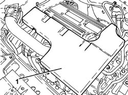
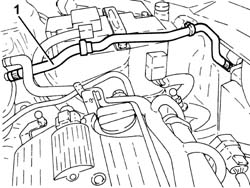
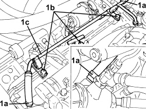
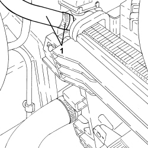
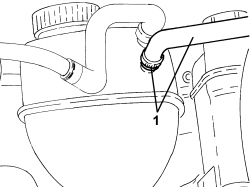

1088D57 ENGINE COOLANT RETURN PIPE TO SUPPLY RESERVOIR - R.R.
- Path
- Procedures > 10 ENGINE > 1088 ENGINE COOLING > 1088D COOLANT PIPES AND HOSES > 1088D57 ENGINE COOLANT RETURN PIPE TO SUPPLY RESERVOIR - R.R.
- Kind
- repair procedure (removal / refitting; the operation number is the code)
- Applies to
- engines: 1.8, 2.2, 1.9 JTD 16v, 2.4 JTD 20v; all production periods
- Interactive page
- https://sloeber94.github.io/elrnDB-fCrm/en/#/194000409
Applies to: engines: 2.2; all production periods
 Removing
Removing
 Refitting
Refitting1. Remove the sound insulation cover fastened to the engine by three pins.

Applies to: engines: 2.2; all production periods
1. Loosen the bands, disconnect the engine coolant return pipe to the supply reservoir and remove it.

Applies to: engines: 2.2; all production periods
Refitting
Removing- Place the coolant return pipe to the engine coolant reservoir in position and tighten the bands and the nut.
- Place the sound insulation cover back in its housing and secure it to the engine using the three pins.
Applies to: engines: 1.9 JTD 16v, 2.4 JTD 20v; all production periods
Removing
RefittingOp. 1016A10 SOUND-PROOFING COVER - R.R
1. Loosen the bands (1a), undo bolts (1b) and remove the coolant return pipe to the engine coolant reservoir.

Applies to: engines: 1.9 JTD 16v, 2.4 JTD 20v; all production periods
Refitting
Removing- Place the coolant return pipe to the engine coolant reservoir in position and tighten the bolts and the bands.
Applies to: engines: 1.8; all production periods
Removing
Refitting1. Loosen the band and disconnect the coolant return pipe from the connector on the radiator.

Applies to: engines: 1.8; all production periods
1. Loosen the band and disconnect the coolant return pipe from the tank and remove it from the intermediate retaining clips on the battery drip tray.

Applies to: engines: 1.8; all production periods
Refitting
Removing- Place the coolant return pipe in position and connect it to the intermediate retaining clips on the battery drip tray.
- Connect the coolant return pipe to the connector on the radiator and tighten the band.
- Connect the coolant return pipe to the reservoir and secure it using the band.